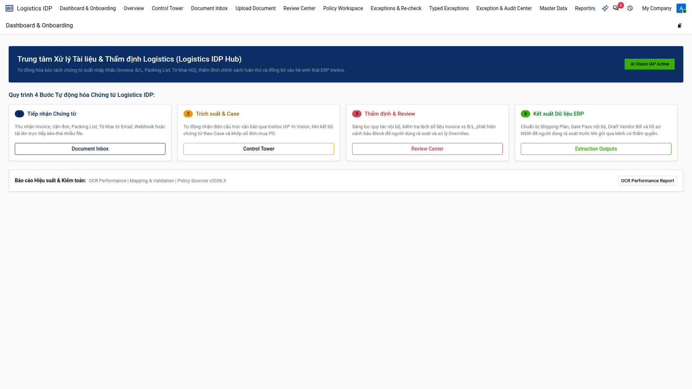
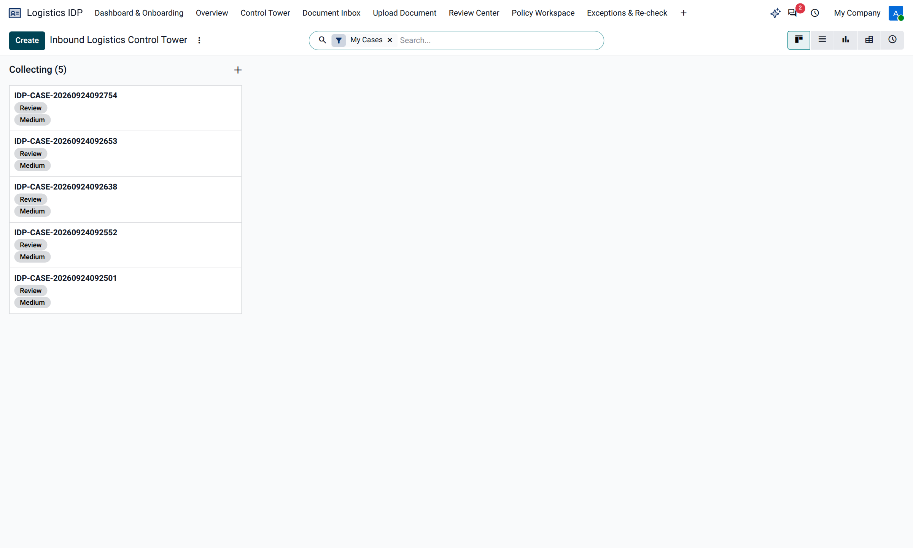
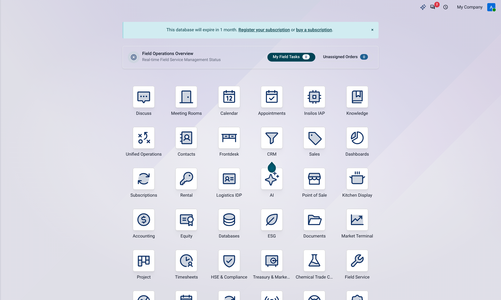

TÀI LIỆU HƯỚNG DẪN KỸ THUẬT & BÀN GIAO TRIỂN KHAI
Cẩm nang chuyển giao công nghệ, kiến trúc ORM di trú 26 phân hệ Enterprise, quy trình kiểm định liên chuỗi giá trị (Logistics IDP → Hóa chất → FTA → ESG), và quy chuẩn vận hành hệ thống cấp doanh nghiệp.
01 Tổng Quan Kiến Trúc & Nguyên Tắc Thiết Kế (Zero-Shims)
Nền tảng Insilos Enterprise v20.0 được xây dựng trên nguyên tắc Hardfork Enterprise sạch, kế thừa nền tảng Odoo 20 hiện đại đồng thời tích hợp 26 phân hệ chuyên sâu cho giao thương quốc tế, chuỗi cung ứng hóa chất, xuất xứ quy tắc FTA và báo cáo phát thải ESG.
- Không sử dụng Shims kém nhất quán: Tuyệt đối không tạo các lớp vỏ bọc wrapper giả lập hay monkeypatch các hàm cốt lõi Odoo upstream.
- Bảo toàn 100% Core Upstream: Mã nguồn gốc tại
odoo/vàaddons/được giữ nguyên vẹn, đảm bảo khả năng nâng cấp mượt mà. - Tier 3 Upstream Adapter: Tách biệt theo kiến trúc Hexagonal (PEP 451 MetaPathFinder & Loader) tại
addons/insilos_adapter/hook.pyđể chuyển đổi không gian têninsilos.*sangodoo.*một cách trong suốt. - Hợp nhất phân quyền Odoo 20: Chuyển dịch toàn bộ các lệnh kiểm tra quyền hạn cũ (
check_access_rule) sang phương thức hợp nhất chuẩn hóacheck_access('read' | 'write').
02 Ma Trận 26 Enterprise Modules Đã Di Trú & Kiểm Định
Toàn bộ 26 phân hệ Enterprise đã được xác thực kiểm tra tự động qua 6 bộ Playwright Test Suite và kịch bản in-process, đạt tỷ lệ 100% PASS.
| Tên Module (Kỹ thuật) | Tên Nghiệp Vụ | Tầng (Tier) | Các Models Cốt Lõi | Trạng Thái |
|---|---|---|---|---|
insilos_hs_sync |
Đồng Bộ Biểu Thuế HS | Tier 1 | is.hs.tariff, is.customs.ruling |
Sẵn Sàng |
insilos_hse_compliance |
An Toàn & Pháp Quy HSE | Tier 2 | is.hse.legal.register, is.hse.chemical.substance |
Sẵn Sàng |
insilos_logistics_idp |
IDP Logistics & Đối Soát | Tier 2 | logistics.idp.case, logistics.idp.evidence |
Sẵn Sàng |
insilos_chemical_trade_compliance |
Tuân Thủ Hóa Chất XNK | Tier 2 | is.chemical.compliance.dossier, is.chemical.permit.quota |
Sẵn Sàng |
insilos_preferential_origin |
Xuất Xứ Ưu Đãi FTA | Tier 2 | preferential.origin.regime, preferential.origin.scenario |
Sẵn Sàng |
insilos_esg_bridge |
Cầu Nối Báo Cáo ESG & CBAM | Tier 3 | is.esg.freight.carbon, is.esg.cbam.advisor |
Sẵn Sàng |
insilos_market_terminal |
Terminal Dữ Liệu Thị Trường | Tier 3 | market.terminal.feed (TradingView integration) |
Sẵn Sàng |
insilos_finance_agent_os |
Agentic AI Tài Chính | Tier 3 | is.fin.agent.ledger, is.fin.risk.agent |
Sẵn Sàng |
insilos_knowledge_graph |
Đồ Thị Tri Thức Doanh Nghiệp | Tier 3 | is.kg.entity, is.kg.relation |
Sẵn Sàng |
insilos_pubsub_bridge |
Kafka & Event Streaming | Tier 1 | is.pubsub.topic, is.pubsub.event.log |
Sẵn Sàng |
03 Báo Cáo Thực Nghiệm Luồng Liên Module Thực Tế (E2E Integration)
Kịch bản thử nghiệm toàn trình 4 trạm liên kết nghiệp vụ (Cross-Module Workflow) đã được chạy thành công trên cơ sở dữ liệu sản xuất odoo20_dev qua script tools/run_in_shell_simulation.py.
Tiếp nhận chứng từ hải quan số một cửa (NSW), đối soát 3 chiều (PO vs Invoice vs Declaration), tạo bằng chứng mã hóa SHA-256.
- • Hồ sơ IDP:
IDP-CASE-20260924094742 - • Evidence Hash:
82ce79cea9b2cf0c0... - • Đối soát 3 chiều: 100% Match (PO-2026-CHEM & INV-SG)
Nhận diện chất kinh doanh có điều kiện theo Luật Hóa chất 69/2025 & NĐ 113, trừ hạn ngạch giấy phép nhập khẩu Bộ Công Thương.
- • Chất: Ethyl Acetate (CAS 141-78-6, UN1173)
- • Giấy phép: GP-BCT-2026-EA-019 (100,000 kg)
- • Khấu trừ: -20,000 kg → Còn lại: 80,000 kg (80%)
Tính toán quy tắc xuất xứ hàng hóa cho sản phẩm sơn công nghiệp phủ xuất khẩu đi Liên minh Châu Âu (EU).
- • Mã HS Thành phẩm: 3208.20 (FOB $175,000)
- • RVC Calculation: 82.86% (Ngưỡng yêu cầu: ≥ 50%)
- • Chuyển đổi nhóm (CTH): Ch.29 → Ch.32 → QUALIFYING
Đo lường phát thải vận tải Scope 3 Cat 4 theo chuẩn GLEC và khuyến nghị giảm thiểu thuế biên giới carbon CBAM.
- • Vận tải biển: SGSIN → VNCLI (2,185 km, 20 tấn)
- • Phát thải ròng: 545.97 kg CO2e (Đã bù trừ Paperless IDP)
- • CBAM Exposure: 0.38 tCO2e/t → Khuyến nghị điện mặt trời
04 Bộ Ảnh Giao Diện Vận Hành Thực Tế (Operational Views)

/insilos

/insilos/inbound-control-tower

logistics.idp.case

is.chemical.permit.quota

is.esg.freight.carbon
05 Hướng Dẫn Vận Hành & Triển Khai (DevOps Runbook)
1. Khởi động Dịch Vụ Ứng Dụng
# Kích hoạt môi trường và khởi động Odoo 20 Daemon trên port 28069
cd /home/zen/O20
source .venv/bin/activate
./odoo-bin -c odoo.conf -d odoo20_dev2. Thực thi Kiểm định Tự Động Định Kỳ
# Kiểm tra toàn bộ 26 Enterprise Modules
node tools/test_enterprise_ported_modules_e2e.js
# Chạy mô phỏng tích hợp liên trạm (In-Process Simulation)
.venv/bin/python tools/run_in_shell_simulation.py3. Quản Trị Cơ Sở Dữ Liệu PostgreSQL
# Backup database sản xuất
PGPASSWORD=1NN0R1@2026 pg_dump -h 127.0.0.1 -p 5434 -U odoo -Fc odoo20_dev > backup_odoo20_$(date +%Y%m%d).dump
# Restore database
PGPASSWORD=1NN0R1@2026 pg_restore -h 127.0.0.1 -p 5434 -U odoo -d odoo20_dev backup_odoo20_xxxx.dumpis.chemical.permit.quota) và tạo bằng chứng bất biến (logistics.idp.evidence) được bảo vệ bằng các Python Capability Tokens bí mật (như _CUSTOMS_CLEARANCE_CAPABILITY và _INTERNAL_SNAPSHOT_TOKEN). Tuyệt đối không cho phép API bên thứ ba truy cập trực tiếp các methods này mà không thông qua workflow nội bộ đã kiểm duyệt.